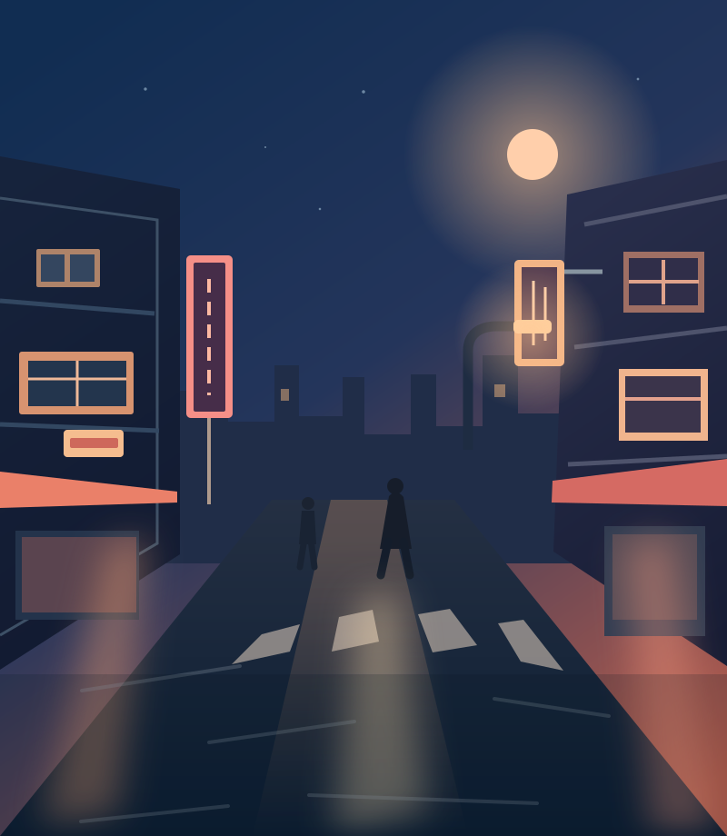

你的隨身攝影學習指南 · VOLUME 01
把每一次拍攝，
把每一次拍攝，
變成值得收藏的畫面。
從曝光、構圖、夜景街拍，到一支短片的分鏡規劃。
在這裡，把攝影技巧整理成真正帶得走的筆記。
08篇攝影筆記
04個學習主題
∞持續新增內容

THE FIELD GUIDE01 — 08
THE LIBRARY / 知識庫
選一個主題，開始練習。
不追求完美器材，
先學會如何看見好畫面。
載入文章中...點選卡片，閱讀完整內容 ↗
沒有找到相關筆記。試著換個關鍵字或分類。
BUILT TO GROW不是一次完成，
看看網站如何延伸 不是一次完成，
而是每次都能繼續寫下去。
網站由 AGENTS.md 定義規則。新增文章只需加入符合格式的資料，清單與文章頁就會依規則顯示。